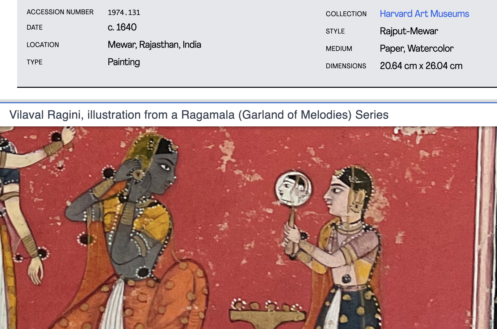

Fall 2024 Harvard Map Collection

Harvard Map Collection
- finding map sources
- finding GIS data sources
- GIS methods and software
- Harvard Geospatial Library
- 1:1 appointments
- drop-in office hours
- workshops
- in-class activities
- technical tutorials
- example student projects/case studies
Case studies
Mapping the Russian Language
Mapping Color
Search by color
Search by color results

Artwork metadata with location

Geonames database

Black Teacher Archive


Paid research assistantships in the Map Collections
In the field
Creating spatial data

Spatial overlay for climate studies

Ways to connect
-
Know you need help with your data right away? Make an appointment with research librarian Scott Walker in the Harvard Map Collection.
-
Know you generally would like to work with the Harvard Map Collection and want to chat about options?
- Make an appointment with Belle
- Drop in to weekly office hours (no appointment required!)
- Belle will be back in class on November 5th to help brainstorm project ideas, and on November 12 to walk us through a hands-on activity about how to find and edit your project data.